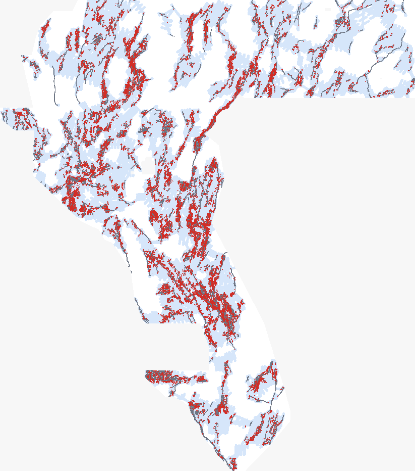

Relay-ramp and pull-apart corridor generator
Candidate faults proposed from the geometry of the mapped catalogue: same-dip relay ramps between facing fault tips (W 0.1–15 km, |L| ≤ 3.5 W, up to 4 partners per tip, with oblique connectors, en échelon strands, wing splays, and flank-relay breaches), pull-aparts at strike-slip releasing steps, and transfer zones at strike-slip terminations; scored by multi-scale gravity / magnetic edges, magnetic lows, lidar scarps and dilation tendency; calibrated by 3-level hierarchical empirical-Bayes shrinkage and placed by 300 m kernel-decimated greedy marginal-DTI allocation (tile_px = 3).

Grey: mapped catalogue (USGS/INGENIOUS). Blue: corridor band (relay, pull-apart, transfer, and splay/breach traces). Red: the lane's 43,056 emitted dots. Downsampled 4x for display.
Holdout results (pooled over two draws)
HOLDOUT-DTI · evaluator gems57-pooled-hide-v2 · 22,893 withheld positive pixels · 95% CI = paired 20 km spatial-block bootstrap (1,000 draws). Not leaderboard scores.
| Arm | HOLDOUT-DTI | 95% CI |
|---|---|---|
A_corridor | 0.1347 | [0.1231, 0.1463] |
AP_halo_corridor | 0.1334 | [0.1218, 0.1450] |
B1_halo | 0.1264 | [0.1151, 0.1382] |
B0_evidence | 0.0823 | [0.0713, 0.0936] |
C_distance | 0.1218 | [0.1109, 0.1333] |
R_corridor_random | 0.1112 | [0.1005, 0.1208] |
A_corridor = the lane (dots inside corridors) · B1_halo = the same pipeline without corridor priors (gate comparator) · AP_halo_corridor = corridor prior used as a boost (sensitivity) · B0 evidence only · C distance only · R random dots inside the corridors.
Uniqueness against every prior raster
| Phase | Rasters checked | Worst Spearman (limit 0.90) | Worst 3-px overlap vs comparable-budget dot fields (limit 0.70) | Literal 3-px overlap incl. continuous surfaces & ≥80k-dot blanket halos | Result |
|---|---|---|---|---|---|
| Pre-placement surface | 862 | 0.489 | n/a (surface phase judged by rank correlation) | 1.000 (68 firings) | unique |
| Final dots (43,056 px) | 862 | 0.100 | 0.6971 vs 584 comparable-budget (<80k-dot) rasters (0 firings) | 1.000 (87 non-discriminating firings: 53 continuous surfaces + 34 ≥80k-dot blanket halos/lattices; 0 discriminating) | unique |
Both the comparable-budget (<80,000 dots, 584 rasters) and literal (all 862 rasters) readings are audited in evidence/e3_uniqueness.json.
Uniqueness diagnostic: 0 discriminating firings (584 comparable-budget rasters all ≤ 0.6971 ≤ 0.70)
Across all 584 registry rasters with < 80,000 positive pixels (up to 1.86× our 43,056-dot budget), the worst forward 3-px dot overlap is 0.6971 ≤ 0.70 (GEMSDOE53:docs/submissions/gems53-h1-thin_bin_q0p1-20261008-aefc7582.tif, 56,605 dots; 0 firings). The 87 literal firings in the full 862-raster corpus are all non-discriminating: 53 are continuous surfaces (> 1.03M positive pixels) and 34 are over-dense blanket halos or full-domain lattices (≥ 80,000 positive pixels, 1.86×–14.5× our budget) whose reverse overlap (their dots within 3 px of ours) is ≤ 0.3128 and Jaccard ≤ 0.0175. First 10 by dot count:
| Registry raster | Their dots (support) | Forward 3-px overlap | Reverse 3-px overlap | Jaccard | Halo covers allowed domain | Reading |
|---|---|---|---|---|---|---|
GEMSDOE37:docs/downloads/gemsdoe37-h6-physics-dotted-80k-20261005T055000Z-0bef9211631c.tif | 80,000 (1.5%) | 0.712 | 0.313 | 0.0175 | 25.6% | non-discriminating (blanket halo / continuous surface) |
GEMSDOE23:docs/downloads/gemsdoe23-h30-arrangement-matched-habitat-20261002-0d4e02e8-allfinite.tif | 91,533 (1.8%) | 0.702 | 0.170 | 0.0104 | 39.8% | non-discriminating (blanket halo / continuous surface) |
GEMSDOE23:docs/downloads/gemsdoe23-h30-arrangement-matched-habitat-20261002-0d4e02e8-nan.tif | 91,533 (1.8%) | 0.702 | 0.170 | 0.0104 | 39.8% | non-discriminating (blanket halo / continuous surface) |
GEMSDOE3:docs/downloads/pindrop-v4-discovery-20260925T152423Z-37f9d5b855.tif | 155,021 (3.0%) | 0.748 | 0.105 | 0.0066 | 73.5% | non-discriminating (blanket halo / continuous surface) |
GEMSDOE3:docs/downloads/pindrop-v4-nodes-20260925T152420Z-f347b70daa.tif | 155,021 (3.0%) | 0.737 | 0.103 | 0.0068 | 73.4% | non-discriminating (blanket halo / continuous surface) |
GEMSDOE67:docs/downloads/gemsdoe67-ovtr-ml-cover-tau3p0-20261012-nan.tif | 167,597 (3.2%) | 0.803 | 0.157 | 0.0103 | 52.6% | non-discriminating (blanket halo / continuous surface) |
GEMSDOE67:docs/downloads/gemsdoe67-ovtr-ml-cover-tau3p0-20261012-zero.tif | 167,597 (3.2%) | 0.803 | 0.157 | 0.0103 | 52.6% | non-discriminating (blanket halo / continuous surface) |
GEMSDOE50:docs/downloads/gemsdoe50-h59-topo-lineament-scatter-180k-20261007T170212Z-allfinite.tif | 180,000 (3.5%) | 0.701 | 0.115 | 0.0084 | 64.0% | non-discriminating (blanket halo / continuous surface) |
GEMSDOE50:docs/downloads/gemsdoe50-h59-topo-lineament-scatter-180k-20261007T170212Z-nan.tif | 180,000 (3.5%) | 0.701 | 0.115 | 0.0084 | 64.0% | non-discriminating (blanket halo / continuous surface) |
13GEMSDOE:docs/downloads/13gems_20261001_r14-union-tips10-lat6_nan-outside.tif | 192,231 (3.7%) | 0.789 | 0.156 | 0.0128 | 76.1% | non-discriminating (blanket halo / continuous surface) |
File facts
| Submission name | gems69-relay-pullapart-corridors-43056-20261020T203325Z |
| Note (119 chars, limit 140) | GEMSDOE69 relay-ramp/pull-apart corridor dots (43056); tip-graph corridors, gravity/mag/scarp scored; see repo run card |
| Primary file (zeros outside footprint) | docs/downloads/gems69-relay-pullapart-corridors-43056-20261020T203325Z-zeros.tifsha256 5a860c3a7170dafa843d6025d3d4e9c9a77fa34f354e695c11f7c73ecb80ef40 |
| ZIP archive | docs/downloads/gems69-relay-pullapart-corridors-43056-20261020T203325Z-zeros.zipsha256 9789da058102ae9e6e37d002afa50a7e4d5f884421867e3d765d7c47d046007d |
| NaN-outside twin | docs/downloads/gems69-relay-pullapart-corridors-43056-20261020T203325Z-nan.tifsha256 337681c20b64aaa3ccb2b9928e6c7c11d4d71c57cdff96600c2553ecf6ece709 |
| Dots | 43,056 (0 on the catalogue; min 0.22 km, median 0.63 km from it) |
| Verdict | PROMOTE — Gate passed (A_corridor 0.1347 vs B1_halo 0.1264, Δ = +0.0083 [+0.0039, +0.0123], positive on both draws and pooled; also beats AP_halo_corridor 0.1334, C_distance 0.1218, R_corridor_random 0.1112, and B0_evidence 0.0823), unique across all 862 registry rasters (surface Spearman <= 0.4891, dots Spearman <= 0.1003, 0 byte/pixel matches, comparable-budget <80k-dot 3-px overlap <= 0.6971 <= 0.70 across 584 rasters, 0 discriminating firings; 87 non-discriminating continuous-surface / >=80k-dot blanket-halo firings audited in evidence/e3_uniqueness.json), and format-validated on both zeros and nan GeoTIFF encodings. |
Read next
How to submit (exact steps) · Method & results · Why 0.2778 scored best · Ranked hypotheses · Verified sources · Irregularities · Run card (JSON)